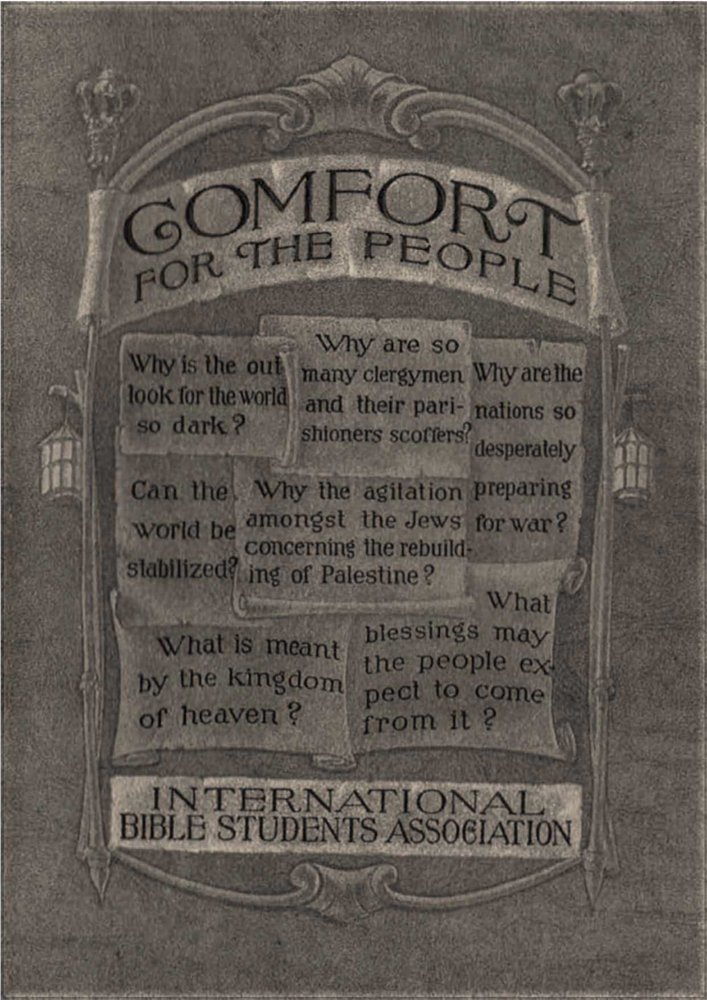

Why
are so
so
Why is the out many clergymen Why are the 1 Ui^? and their parishioners i t Tn so dark?
scoffers scoffers? desperately
Vvr* . m tu"*4V u, \ jj-jMii ft Can the Why the agitation preparing wnrkl hope to demonstrate the Jews. for war? * concerning the rebuilding of Palestine? What
What is meant
blessings may
the people ex
by the kingdom pecl to come of heaven ? I from it ?
from it ?
EKISS
^ c^
1. Why is the Outlook for the World so Dark?
Page Eleven
2. Why Clergymen Are Scoffers.
Page Twenty-one
3. Why are the Nations so Desperately Preparing for War? Page Thirty-three
4. Why the Agitation Amongst the Jews Concerning the Rebuilding of Palestine?
Page Thirty-six
5. Can the World be Stabilized?
Page Forty
6. What is Meant by the Kingdom of Heaven?
Page Forty-two
7. What Blessings May the People Expect to Come from It? Page Forty-six
INTERNATIONAL BIBLE STUDENTS ASSOCIATION Brooklyn, N. Y.
COMFORT FOR THE PEOPLE
written by J. F. Rutherford author of
"The Harp of God"
"World Distress — Why?" "Can the Living Talk with the Dead?" "Millions Now Living Will Never Die!" etc., etc.
PRINTED IN U. S. A.
Copyrighted 1925 by
INTERNATIONAL BIBLE STUDENTS ASSOCIATION
Brooklyn, N. Y.
COMFORT FOR THE PEOPLE
"For we know that the whole creation groaneth and travaileth in pain together until now" "Blessed are they that mourn: for they shall be comforted." — Ro
mans 8:22; Matthew 5:4.
THE year 1925 is just beginning. Thoughtful men at such times try to scan the horizon to see what are the prospects for the year. Two gentlemen meet in a great metropolis of the world. Both of them being men of large sympathies, and desiring to see humanity bettered, their conversation quickly turns to the subject of the outlook for the future. For convenience we call one of them by the name Mr. Hunger; the other, Mr. Barnabas.
MR. HUNGER: These are strangely peculiar times in which we are living, Mr. Barnabas. I am not complaining, nor am I a pessimist. I have always been conservative, and I have tried to look on the bright side of affairs. But there are many things just now that are not only perplexing but distressing and hard to understand. Ten years have passed since the great World War began. When that terrible storm swept the earth and peace came, we business men thought that great prosperity would follow. We looked for better conditions. But we do not see them. It seems to me that the situation is well summed up by the words of one of the world's great statesmen, who write frequently for the public press and who at the conclusion of 1924 had this to say about world conditions:
"The deepest impression left on my mind by 1924 is of a world once more reconciled to black. The iridescent colors of a new hope flung on the sky by the Great War, after becoming year by year fainter and more mildewed with the unfavorable weather that followed peace, seem finally to have faded away altogether during this year and a dull grey hangs over the earth."
An editorial in one of our leading dailies sums up the matter like this:
"From 1914 to 1918, men feared those who had the power to kill the body. Now discriminating minds in all parts of the world stand aghast in the presence of forces which threaten to destroy civilization.... If any
one had told us, at the beginning of this century, that the most disastrous and destructive war of human history would be fought on the continent of Europe between 1914 and 1918, probably most of us would not have believed the prophecy. We thought that we had come too far from the age of barbarism for anything like that to happen again: and that if a war cloud should arise which threatened to envelop any considerable portion of the nations of the earth, the moral forces of the world would unite against it, the appeal would be to reason, and not to the sword, and the disaster would be averted. Alas, for the vanity of human expectations and the disappointment of human hopes!"
Mr. Wm. G. Shepherd, the noted war correspondent and author, with the close of 1924 says some pointed things about the next war that is impending. He serves notice that he will not again hire out as a war correspondent in the next war. He says:
"The thing that is being cooked up by experts in Europe at this moment is something for everybody to stay away from unless duty calls him as a soldier. The next contest between nations across the Atlantic will be an insult even to the dogs of war."
He points out how the nations are feverishly preparing for the destruction of each other by poison gas and other things fired from the air. Furthermore he says:
"Cyclones, earthquakes, volcanoes, tidal waves, famines, plagues — no upheaval of nature can be as terrible as chemical warfare from the skies. Europe is getting ready for wholesale aerial chemical warfare.
"What the nations of Europe are already prepared to do to each other in the way of dropping poison gas from the skies is almost too terrible for even the Old World diplomats to contemplate.
"Aerial chemical warfare is the ghost at every diplomatic council table in Europe. Every diplomat knows the horror that his own nation is able to wreak on another, and he knows the horror that another nation might wreak on his.
"The next war in Europe will start off with a poison gas attack on some great European city. And no one in that city will know that war is on until this attack with poison gas from the sky has been made.
"There will be no written declaration of war; the indescribable attack itself will be the declaration of war."
After describing in detail how that France could paralyze London, and kill hundreds of thousands of people in a few hours he adds:
"The whole prospect, indeed, of war at its newest worst is so terrible that it's useless to try to discuss the subject with great earnestness.
"It's too terrible to believe — the story of what CAN be done in the next war. But the story, as I've tried to outline it, is a true story.
"Even the silk-hatted diplomats of Europe, who are rarely afraid of war, seem frightened at today's possibilities. Why, even the profiteers will be in danger in this new kind of fighting. That, perhaps, will help to keep the peace."
I have known you for some time, Mr. Barnabas. I know that you keep abreast with the current news; and I have noticed that amidst all these distressing things that are published and that are happening, you maintain your usual smile and poise of mind. You seem to be happy. I am glad to see you that way; but I have wanted to ask you why and how you can be happy amidst such terrible conditions. I believe that I speak the sentiments of millions of others who are distressed and perplexed because of what we see in the world. May I ask you what are your conclusions about these conditions?
MR. BARNABAS: Do not be discouraged, my friend. Often it is darkest just before day. Like yourself, I am familiar with the terrible disaster that is threatening to engulf the world. I believe, however, that if you understand the real cause for these troublous times you would likewise take courage, be glad and smile.
MR. HUNGER: I am keenly interested to know why you can view the world conditions as they now exist and still be happy. There must be a reason.
MR. BARNABAS: There is a reason. Suppose George Washington, in his farewell address, had told the people of the United States that from 1914 to 1925 would be a time of trouble, great distress and perplexity; and that these things would be but a harbinger to a better time just at hand; and that shortly following these troublous times conditions would greatly improve for the better and for the benefit of the people. How many people, do you imagine, would be carefully considering just now what Mr. Washington had predicted? But mark you, one far greater than Mr. Washington foretold this much and more. Mr. Washington had faith in God and in the Lord Jesus Christ. It is told of him that in the terrible winter at Valley Forge he was often found in some quiet place kneeling in the snow, appealing to the throne of heavenly grace for help. Doubtless his prayers were heard. Mr. Washington trusted in the Lord Jesus Christ and in the words of the Bible. The great God of the universe, to whom he prayed, through his chosen prophets long ago plainly marked out the conditions that we now see about us, and others that shall follow. These statements in the Bible are called prophecies. Prophecy is not some vague or mystical thing that can never be understood. Prophecy really means the history of the world told in advance. This could be done only by the great Divine Mind. It is truly written: "Known unto God are all his works, from the beginning." (Acts 15: 18) Knowing what was going to transpire, he caused his holy men, whom he called prophets, to write down these things in order that when the things foretold should come to pass, devout students of the Bible might know and understand the meaning and take courage and comfort therefrom.
For instance, we find recorded in the Bible: "For whatsoever things were written aforetime were written for our learning, that we through patience and comfort of the scriptures might have hope." — Romans 15: 4.
MR. HUNGER: But, Mr. Barnabas, what you call prophecy has always seemed so mystical and ethereal to me that I have difficulty in grasping it and in thinking of it as real.
MR. BARNABAS: I know that is true. Most men look upon spiritual things as things which can not be understood, and hence they do not try to understand them. But it is the will of the Lord that in due time men shall understand. Prophecy is every day being fulfilled before our eyes. Let me give you an example.
The radio is only about five years old; that is to say, five years ago little was known about wireless telephones.
Twenty-five years ago it would have been thought impossible to talk to a man five miles away without even a wire to connect the two voices. Now you sit in your home at night with the doors and windows closed and barred, and you turn a knob in a little box, and there comes to you through the walls the voice of sweet singers or the speech of some one else many miles away. You hear as plainly and easily as though the speaker were in the room with you. At first you said: "That is marvelous, that is wonderful!" And even so it is. That is the fulfilment of prophecy, Mr. Hunger.
More than 3000 years ago God, through his prophet, foretold the radio. God had this in mind from the beginning. We know that electricity is necessarily employed in radio, but we do not know what electricity is. We know that electricity is often spoken of as lightning. In guarded language God's prophet long ago wrote: "Canst thou send lightnings, that they may go, and say unto thee, Here we are?" — Job 38: 35.
The Prophet did not at the time understand what he wrote. God understood it. He intended for man to understand it when it had come to pass.
Through the prophet Daniel Jehovah said that at the time of the end there would be great increase in knowledge and much running to and fro. (Dan. 12: 4) We see that this is now being fulfilled. This is prophecy fulfilled. The time of what end? you ask. I answer: The time of the end of the long night of sickness, sorrow, suffering, and distress for humanity. Other prophecies show that this dark night shall be followed by times of great blessing for mankind. Others of God's prophets foretold that just before the coming of the great blessings to the people there would be upon earth great trouble, great sorrow and perplexity and distress, exactly as you have been repeating to me.
You say, and millions of other people say, that the World War weakened the nations, and that since then the nations have been growing weaker and weaker, and that it is apparent that all nations are approaching a great collapse. Why not then try to ascertain the reason for this? If the great Divine Mind foretold the radio and the airships, the railway trains and other means of rapid transit, and the great increase of knowledge, why not look into the Bible as to the cause of the world trouble and what may follow? If we find a reason assigned in the Bible for the trouble, might we not expect that the all-wise and loving God would also indicate a remedy? That is exactly what I have found; and, briefly, that is the reason why amidst all the sorrow, turmoil and suffering I can be, and am, happy. I am not happy because I see the people suffering, but I am happy because I know what it means and know what shall follow.
Much has heretofore been said about 1925. Many men of the world, drawing on their own wisdom, have pointed it out as an important year. Others have referred to the Bible, which is the only true source of information on the subject. Many people are looking for something phenomenal to happen. But if we see that we are in a time when prophecy is being fulfilled, that should be sufficient to cause us to consider calmly and carefully these prophecies as they are fulfilled, and to know that a great, wise and loving God will guide in the right paths the destinies of those who try to serve him, and that ultimately they will receive a blessing. A careful consideration of prophecy will enable you to be fortified against whatsoever comes, and better able to meet the conditions as they do come.
MR. HUNGER: But how can I rely upon the Bible?
MR. BARNABAS: The best proof that the Bible is the word of the Supreme Being is the fact that in its pages you will find foretold centuries ago what will transpire, and that now we are seeing those things transpire exactly as foretold. Such prophecy could emanate only from the Divine Mind. The careful student of the Bible finds that it contains a marvelous outline of the divine plan or program; that the first chapters tell of the creation of man and why sorrow came upon the world; that the last chapters tell particularly of the blessings coming to man; whereas intermediate parts detail God's preparation to carry out this wonderful arrangement. Furthermore, it will be found that the Bible is exactly in harmony with reason and that it will not admit of an unreasonable interpretation or construction. — Isaiah 1:18.
MR. HUNGER: I am deeply interested in knowing more about these things. May I then propound to you, Mr. Barnabas, a few questions, and ask you kindly to give me your answer, and give that answer from the Bible, if you find the answer is contained therein?
MR. BARNABAS: I shall be glad to have you do so, and I will make an honest endeavor to point out the answer from the Scriptures, and to let you be the judge as to the reasonable deduction or conclusion to be drawn therefrom.
MR. HUNGER: I would like to be able to believe the Bible; and if you can show me that it is reasonable and that it contains the remedy for the ills of human kind I shall be glad to know it.
Other questions will necessarily grow out of these.
MR. BARNABAS: Permit me to take up these questions in the order in which you have propounded them. Bear with me patiently, please, while I attempt to answer them.
When the great Roman Empire was crumbling, that was a dark day for Rome. When the Grecian world power was falling, that was a dark day for Greece. When the Medes and Persians were fleeing before the hordes of Greeks, that was a dark day for the Medes and Persians. God foretold the rise and fall of all these world empires. When Jerusalem fell and her people were carried away captives, that was a dark day for the Jews. And so with the whole world now, including all the nations of Christendom so-called. All are in great distress and perplexity; and because thereof it is a dark outlook for the world. The present trouble upon the nations of earth is but the fulfilment of prophecy. To appreciate this it is profitable to consider here briefly some history.
Jehovah God organized one nation on earth and only one, and that was the nation of Israel. He organized it for a purpose. They were his people. To Israel he said: "You only have I known of all the families of the earth." (Amos 3:2) He organized that nation, and dealt with it as an example and to demonstrate to his intelligent creatures his manner of dealing with mankind. He gave to that nation a code of perfect laws, and established amongst that people the true and pure religion. He warned them against the violation of their covenant with him; and time and again told that people that if they persisted in disobeying him and in breaking their covenant, he would destroy them as a nation and cast them away.
That nation had some good kings and some wicked ones. Zedekiah, the last king, was a very wicked one. Because of the repeated violations of its covenant with him Jehovah said to that nation: "Therefore thus saith the Lord God, Because ye have made your iniquity to be remembered, in that your transgressions are discovered, so that in all your doings your sins do appear; because, I say, that ye are come to remembrance, ye shall be taken with the hand. And thou, profane wicked prince of Israel, whose day is come, when iniquity shall have an end, thus saith the Lord God, Remove the diadem, and take off the crown; this shall not be the same: exalt him that is low, and abase him that is high. I will overturn, overturn, overturn it; and it shall be no more, until he come whose right it is; and I will give it him." — Ezekiel 21; 24-27.
This prophecy had a literal fulfilment. In the year 606 B. C., when the king of Babylon took Zedekiah prisoner, he put out his eyes and carried him and the whole nation captive to Babylon. "So they took the king, and brought him up to the king of Babylon to Riblah; and they gave judgment upon him. And they slew the sons of Zedekiah before his eyes, and put out the eyes of Zedekiah, and bound him with fetters of brass and carried him to Babylon." (2 Kings 25: 6, 7) Prior to that time the other nations of earth were under the baneful and evil influence of Satan, who had seized control over them. When God permitted the overthrow of Israel and the carrying away of that people, Satan overreached them and became the god of the whole world. By the word "world" is meant organized nations and governing powers of earth.
When Jesus was on earth, he spoke of Satan as the prince, or invisible ruler of the world: "Now is the judgment of this world: now shall the prince of this world be cast out." (John 12:31) St. Paul plainly states that Satan is the god, or invisible ruler, of the evil world. Jehovah did not prevent Satan from taking possession. God has permitted him to influence the peoples of the earth in this, that he has not interfered. It seems quite clear that the reason why God has not interfered is that it was his purpose that the people should have a full and complete lesson in the baneful effects of wrong-doing, so that when his due time should come to take control of the affairs of the earth, the people would appreciate and love righteousness and do right. We should not expect Satan to always be the invisible ruler, or god, of the people and nations of the earth. You will note in the decree just quoted from the prophecy concerning the overthrow of
Israel that God declares that some time in the future he who would have a just right to rule should come and take charge of the affairs of earth. But the question has always been: When?
The Lord plainly pointed out that the period of the Gentile Times would be 2520 years. (Leviticus 26:18) That is to say, for 2520 years Jehovah would not interfere with the Gentile nations of the earth doing what they could to establish a government to be desired. During all that time Satan has overreached the mind., particularly of the ruling classes. It is to be expected that at the end of that period of time the Lord would interest himself in the affairs of the world.
It was in the year 606 B. C. when the nation of Israel was overthrown, that the Gentiles established a universal empire under Nebuchadnezzar. If we add 606 B. C. to 1914 A. D. we have 2520 years, the period of the Gentile dominion. Therefore it is reasonable to expect that the Gentiles would reach the legal end of their universal reign in 1914, and that something marked would happen at that time. We should conclude from the scriptures above mentioned that in due time God would send one who had the right to take charge of affairs; and that with the end of the Gentile Times God would begin to make known his will toward the world. The Jews had a fiscal year beginning in the autumn season. According to the measure of the Jewish year, the Gentile Times ended August 1st, 1914. That necessarily marked the end of the world from the legal viewpoint.
Now the greatest of all prophets ever on earth was Jesus of Nazareth. As the Son of God, he spoke with absolute authority. Devout Jews relied upon the prophecies, and had looked forward to the time when a great Deliverer should come and deliver Israel and set up a world power to bless mankind. Jesus taught them concerning that kingdom. You will note that he began his ministry by saying, "The kingdom of heaven is at hand." (Matthew 10:7). You will note that all his parables related to the establishment of the kingdom. His disciples came to him and propounded the direct question as to what would be the evidence of the end of the world. (Matthew 24: 3) The end of the world necessarily would mean the end of the right of the Gentiles to rule without interruption. Jesus' answer was made in prophetic language. He stated that one of the evidences of the end of the world would be marked by a World War, followed by famine, pestilence, and revolutions, and that these things would mark the beginning of the sorrows upon the nations of the world. — Matthew 24: 7, 8.
Now look at your diary. Mark the autumn season of 1914, particularly August 1st; and what has happened? At that time nation rose against nation, and kingdom against kingdom in the greatest war the world has ever known. Then there came quickly the dread Spanish influenza, claiming millions of victims in every quarter of the earth; and with it came a great famine in many portions of Europe and Asia. These things came exactly on time, and were in fulfilment of prophecy, which prophecy fulfilled marked the end of the legal reign of the Gentile powers. It marked the time when the Lord, whose right it is, took unto himself his power and began the ouster proceedings to oust the devil and his emissaries from ruling the peoples of earth.
All these centuries the devil has been plying his wickedness amongst the nations of earth. Is it not reasonable to believe, then, that Jehovah would be angry with such wickedness, and that in his due time he would express this indignation? Referring to this very time, we read in the Scriptures: "We give thee thanks, o Lord God Almighty, which art, and wast, and art to come; because thou hast taken to thee thy great power, and hast reigned. And the nations were angry, and thy wrath is come, and the time of the dead, that they should be judged, and that thou shouldest give reward unto thy servants the prophets, and to the saints, and them that fear thy name, small and great; and shouldest destroy them which destroy the earth." — Revelation 11:17,18.
The World War was the beginning of the sorrows upon the nations, even as Jesus had foretold. Had the nations learned their lesson and accepted the Lord as King then, the trouble would have ceased. They did not.
The Lord, through his prophet, foretold what would follow, in these words: "Come near, ye nations, to hear; and hearken, ye people; let the earth hear, and all that is therein: the world, and all things that come forth of it. For the indignation of the Lord is upon all nations, and his fury upon all their armies: ... for it is the day of the Lord's vengeance, and the year of recompences for the controversy of Zion." — Isaiah 34:1,2, 8.
Is it not easy, then, to be seen that God is expressing his righteous indignation and vengeance against the wicked systems that have long held mankind in thraldom; that these things are but the carrying on of the ouster proceedings preparatory for the establishment of righteousness?
The Lord expressly commands those who are truly consecrated to him to tell the people concerning the day of his vengeance. (Isaiah 61:2) Do you know of any one that is doing this, telling the people about the day of God's vengeance, explaining to them about the trouble? I remind you of a small company of Bible Students who for some time have been distributing papers and tracts and giving lectures, telling the people the meaning of this trouble, and what shall follow. This same company of Christians are also proclaiming to the people the good news concerning the Lord's kingdom and the blessings that shall flow out to mankind. This is clearly in fulfilment of the prophetic utterance of Jesus, as we read: "And this gospel of the kingdom shall be preached in all the world for a witness unto all nations: and then shall the end come." — Matt. 24:14.
When we see the fulfilment of one prophecy of God, we should acknowledge and faithfully believe in other prophecies in the course of fulfilment. Let us therefore examine some more.
When Jesus was telling his disciples what to expect at the end of the world he used this language: "Upon earth distress of nations, with perplexity; the sea and the waves roaring; men's hearts failing them for fear, and for looking after those things which are coming on the earth." — Luke 21: 25, 26.
If men should try to manufacture evidence to fit prophecy could they do so as accurately or as well as we now see the physical facts of this day fulfilling this prophetic utterance? The peoples of every nation are In distress. Their leaders and rulers are in perplexity. They do not know what to do. Men's hearts are fearful. They see impending some great catastrophe, just as you mentioned to me in the outset of our conversation.
They have little or no confidence in anyone. They know not which way to turn.
It is well known, as you have quoted from the noted war correspondent, that all the nations are preparing for war. These nations have first assembled themselves together. They made a League of Nations by which they joined themselves together. God, through his prophet, foretold this, and likewise foretold that the League should fail. "Associate yourselves, o ye people, and ye shall be broken in pieces; and give ear, all ye of far countries: gird yourselves, and ye shall be broken in pieces; gird yourselves, and ye shall be broken in pieces. Take counsel together, and it shall come to nought; speak the word, and it shall not stand: for God is with us." (Isaiah 8: 9,10) Now no one seriously considers that the League of Nations will prevent another war. These nations God has really assembled together as foretold for a purpose. They have ignored God and the Lord's kingdom; and they are in position to receive the expression of God's indignation, as he foretold through his prophet. Note what this prophet says: "Therefore wait ye upon me, saith the Lord, until the day that I rise up to the prey; for my determination is to gather the nations, that I may assemble the kingdoms, to pour upon them mine indignation, even all my fierce anger: for all the earth shall be devoured with the fire of my jealousy." — Zeph. 3: 8.
The noted war correspondent from whom you quoted says: "With the streets and homes, cellars and subways, houses and business buildings of some great city filled with gasping, twisting, choking men, women and children or littered with tens and perhaps hundreds of thousands of dead, the world will know that war has been declared." This picture is a horrible one, but it is not overdrawn. It is interesting, in view of the fact that God's prophet, 2500 years ago, foretold such a condition in these words: "Thus saith the Lord of hosts, Behold, evil shall go forth from nation to nation, and a great whirlwind [terrible war and trouble] shall be raised up from the coasts of the earth. And the slain of the Lord shall be at that day from one end of the earth even unto the other end of the earth; they shall not be lamented, neither gathered, nor buried; they shall be dung upon the ground." — Jeremiah 25: 32, 33.
God's prophet, long centuries ago, foretold that the profiteers and big business would become strong and arrogant in the end of the world, where we now are; and that this terrible trouble would come. Concerning the nations and the trouble upon them, he said: "Their soul is melted because of trouble. They reel to and fro, and stagger like a drunken man, and are at their wits' end. Then they cry unto the Lord in their trouble, and he bringeth them out of their distresses. He maketh the storm a calm, so that the waves thereof are still. Then are they glad because they be quiet; so he bringeth them unto their desired haven." — Psalm 107: 26-30.
I know that it is difficult to understand how one can smile and be happy when he sees this terrible time rapidly approaching. I want to tell you why, however, that you also may smile.
If some loved one of yours had long suffered from a malignant disease, and if the surgeons had informed you that they must perform upon that loved one a major operation, that this operation would be very hard on the patient, but that your loved one would pass over it and recover health and strength, you would feel thankful; and you would be happy that that loved one's sufferings were about to end. Now the whole world of mankind has long been suffering, even as the Scriptures put it: "For we know that the whole creation groaneth and travaileth in pain together until now." — Romans 8: 22.
The Lord, Christ Jesus, the great Physician and Surgeon, is about to perform a major operation. It will be a terrible ordeal on the world; but that done, there will be no more trouble, and all mankind will have an opportunity to return to health and happiness and gain everlasting life.
Note now that when Jesus had mentioned the world war, the famines, the pestilences, the revolutions, distress of nations, and other things marking the end of the world, he speaks of the great climax in these words: "For then shall be great tribulation, such as was not since the beginning of the world to this time, no, nor ever shall be. And except those days should be shortened, there should no flesh be saved." (Matthew 24: 21, 22) You will note that he says there will never be another time of trouble; for this major operation will complete the trouble upon the earth.
The outlook is dark now, Mr. Hunger; but the day is just at hand. I bid you to be of good courage. There will millions die in this great trouble, to be sure; but when the kingdom of our Lord is in full operation, all of these shall be called back from the graves, and amidst peaceable and quiet conditions will be given a full and fair opportunity to be obedient to the Lord, and so doing shall be restored to health and happiness and live in happiness forever.
MR. HUNGER: How long will the trouble last and what may we expect to follow?
MR. BARNABAS: You will pardon me if I answer your questions in the order that you have propounded them; and then I shall be glad to consider this one, and others if you desire.
You ask why the clergymen, who claim to be leaders in Christianity, scoff at the teaching of the Bible, and particularly deny the blood of Jesus Christ as the great redemptive price of mankind. This is also in fulfilment of prophecy, as I shall show you. It is one of the evidences that we have reached the end of the world, and that a better day is just ahead.
The evidence of the end of the world is likewise evidence or proof of the Lord's second coming. You will observe that the two things are linked together in one question propounded by the apostles to our Lord as follows: "Tell us, when shall these things be? and what shall be the sign [evidence] of thy coming, and of the end of the world?" (Matthew 24: 3) In referring to the same time and to what should be expected at that time Jesus said: "When the Son of man cometh, shall he find faith on the earth?" — Luke 18: 8.
These clergymen say that the Bible contains some of the word of God; but they discredit most of it. They positively deny that man was created perfect and was sentenced to death because of sin. They deny that all men became sinners because of Adam's disobedience, notwithstanding the plain statement of the Scriptures. (Rom. 5:12) They claim that man is a creature of evolution and is constantly evolving upward. They positively deny the blood of Jesus Christ as the redemptive and ransom price given for man's salvation, and have denied the kingdom of God and the restoration blessings that will come to man through it.
If the Lord Jehovah could foretell through his prophets the World War, could he not as well foreknow and foretell of these apostate clergymen? In the Bible we read these prophetic words: "For there are certain men crept in unawares, who were before of old ordained to this condemnation; ungodly men, turning the grace of our God into lasciviousness, and denying the only Lord God, and our Lord Jesus Christ" (Jude 4) And again the further prophecy: "But there were false prophets [preachers] also among the people, even as there shall be false teachers [preachers] among you, who privily bring in damnable heresies, even denying the Lord that bought them, and bring upon themselves swift destruction. And many shall follow their pernicious ways; by reason of whom the way of truth shall be evil spoken of." — 2 Peter 2:1, 2.
When we consider what these clergymen teach, is it possible to fit the physical facts more accurately to prophecy? Just as these prophets foretold, there had, come into the churches men who turned the grace of God into lasciviousness (that is, loose handling of the Word) and denying our Lord Jesus Christ. These are false prophets (preachers), and by reason of their false teachings many follow their pernicious ways. The Prophet continues: "Through covetousness shall they with feigned words make merchandise of you." (2 Peter 2:3) Otherwise stated, because of their greediness, with feigned words of pious sanctimoniousness, they make merchandise of religion and of those who are trying to be religious.
Again, when you talk to these men about the coming end of the world, they jeer and scoff; and this also is a fulfilment of prophecy, long ago written in the Bible, as we read: "That ye may be mindful of the words which were spoken before by the holy prophets, and of the commandment of us the apostles of the Lord and Savior: knowing this first, that there shall come in the last days Scoffers, walking after their own lusts, and saying, Where is the promise of his coming? for since the fathers fell asleep, all things continue as they were from the beginning of the creation. For this they willingly are ignorant. " — 2 Peter 3:2-5.
Seeing, then, that the Lord foretold that these pretended teachers of the Bible would be scoffers, if this did not happen it would be strange. The fact that it has come to pass in corroboration of the Lord's Word is further proof that we are in the last days of the old order. And if we see that this old order is passing away to make way for a new, we should take courage and rejoice. Our hearts should be comforted thereby.
Of course, we all know that the title shepherd belongs to a minister of the gospel. There can be no more honorable title given to a man than minister of the gospel, shepherd or clergyman, when that high office is used for the purpose for which it was intended; namely, to teach and minister unto the people concerning the Word of God. I can not speak in too high commendation of the faithful clergymen; because God honors those that honor him. What greater privilege can be given to any man than to serve the Lord and minister his Word to the people? For this reason clergymen are called in the Bible shepherds of the flock and watchmen for the flock. All the clergymen regard themselves as watchmen or shepherds of their flocks, and frequently speak of their congregation as "my flock". God foreknew that they would fall away in the last days of the Gospel Age, where we are, and well knew that they would not understand the Bible and would therefore use it for a wrongful purpose. Through his holy prophet God said of and concerning these men who were once appointed clergymen, thereby foretelling their course when they fell away and became scoffers: "His watchmen are blind; they are all ignorant, they are all dumb dogs, they can not bark; sleeping, lying down, loving to slumber. Yea, they are greedy dogs which can never have enough, and they are shepherds that can not understand; they all look to their own way, every one for his gain, from his quarter." — Isaiah 56:10,11.
Exactly as the Prophet said, we see that these men are mentally blind to God's purposes, and willingly so. And then the Lord calls them D. D.'s. They also call themselves D. D.'s. But the Lord's prophet says that D. D. means dumb dogs. They love ease and comfort. They are greedy for gain; they are shepherds that can not understand; and every man looks for support from his own congregation, regardless of what he teaches.
You may wonder why these seemingly wise men should go mentally and spiritually blind. The reason is, that they have followed their own wisdom, have ignored God's expressed wisdom, and have fallen victims to the adversary. Satan, the god of this world, has blinded them by the false doctrines which they have willingly embraced and taught. (2 Corinthians 4:3,4) The Scriptures show that God permits Satan to put to a test everyone who claims to be His representative. He permitted the devil even to test Jesus. (Luke 4:1-12) Along similar lines the clergy have been put to the test, and have fallen. The power gained by them by reason of their position they have used for selfish purposes. They have fed themselves and have let the flock of God go without attention. (Ezekiel
34:8) Desiring to be admired by men rather than approved by God, they have yielded to the flatteries of men, and have assumed a form of godliness and denied the power thereof.
While boldly assuming to represent the Lord, they have ignored the teachings of Jesus concerning the establishment of God's kingdom on earth, but have willingly joined hands with worldly men, financiers and politicians, to establish a system on earth which they call "the political expression of God's kingdom on earth". The Lord through his prophet foretold that they would forsake the plain teachings of the Bible, and fix up systems of their own: "They have forsaken me, the fountain of living waters [source of life and truth], and have hewed them out cisterns [man-made systems and doctrines], broken cisterns, that can hold no water [really hold no life-giving truth]." — Jeremiah 2:13.
MR. HUNGER: But do not the Fundamentalists adhere to and teach the Bible?
MR. BARNABAS: They do not. Jesus overcame the world, and taught that all of his true followers must overcome the world. (John 16: 33; 1 John 5: 4) The world is the organized ruling powers of the earth, of which Satan is god or invisible ruler. There are three elements that go to make up the world, or governing factors; namely, commercial, political, and religious. In modern times the clergy, both Modernists and Fundamentalists, have joined hands with the other two and formed the ruling element of the present evil world.
No honest man will deny the fact that the clergymen have for years diligently sought out the rich, the influential and the powerful in the community, brought them into the church denominations, and made them prominent members, even elders and deacons in the church.
When war was declared amongst the nations, the clergymen were there to lend their aid, encouragement and support to the warring factions, some on one side, some on the other, notwithstanding that the Lord Jesus, whom they claimed to follow, commanded: "Thou shalt not kill." Each regiment of soldiers is provided with a clergymen, either Catholic or Protestant, Modernist or Fundamentalist. Before the armies go into action, these clergymen hold religious services, and call upon God to bless the fighters and enable their respective soldiers to kill more than the other army can kill.
These clergymen have claimed to represent the kingdom of God, for which Jesus taught his followers to pray. Yet they ignore that kingdom, and advocate a League of Nations, a World Court or like arrangement, or world organizations to accomplish their desired end.
When a political campaign is on, the clergymen take part in it, some on one side and some on the other. If as a class they are representatives of the Lord, how could they possibly be on different sides in war and in politics? Christ is not divided, nor do his true followers war against each other.
It is a well-known fact that the clergymen, both Protestant and Catholic, Modernists and Fundamentalists, are a part of the present world or organized powers. More than that, they are friends of the world, and adopt worldly methods in carrying on their work. They resort to worldly methods and worldly entertainment in their churches, in utter disregard of the teachings of the Bible. Furthermore, they deny the Bible and teach vain philosophies of men. Note what the Lord's inspired apostle says concerning such: "Pure religion and undefiled before God and the Father is this, To visit the fatherless and widows in their affliction, and to keep himself unspotted from the world. " "Ye adulterers and adulteresses, know ye not that the friendship of the world is enmity with God? whosoever therefore will be a friend of the world, is the enemy of God." — James 1:27; 4:4.
Adulterer, within the meaning of this scripture, means the mixing of Christian religion with worldly politics. It is an illicit thing. St. Paul warned against the danger of being led away by these philosophical teachings: "Beware lest any man spoil you through philosophy and vain deceit, after the traditions of men, after the rudiments of the world, and not after Christ." — Colossians 2:8.
A major part of these clergymen have itching ears. They love to hear nice things said about themselves. They love to be approved by the wealthy and powerful of the world. This is exactly what the Scriptures foretold would be the case: "For the time will come when they will not endure sound doctrine; but after their own lusts shall they heap to themselves teachers, having itching ears." — 2 Timothy 4: 3.
These are indeed perilous times. All the colleges, universities and schools have imbibed the evolution theory, and scorned and ignored the Bible; and the clergymen are chiefly responsible for it. Why have these things come to pass now, and why do these clergymen have so little faith in the Bible? I answer: Such is clearly in fulfilment of the prophetic utterance of the Scriptures. In harmony with this we note:
"This know also, that in the last days perilous times shall come.
For men shall he lovers of their own selves, covetous, boasters, proud, blasphemers, disobedient to parents, unthankful, unholy, without natural affection, trucebreakers, false accusers, incontinent, fierce, despisers of those that are good, traitors, heady, highminded, lovers of pleasures more than lovers of God; having a form of godliness, but denying the power thereof: from such turn away." — 2 Timothy 3:1-5.
Having willingly abandoned the Lord's Word and having failed to follow the teachings of Christ Jesus, they have become completely blind to the truth of the Word of God, even as his prophet foretold: "For the Lord hath poured out upon you the spirit of deep sleep, and hath closed your eyes: the prophets and your rulers, the seers hath he covered. And the vision [understanding] of all is become unto you as the words of a book that is sealed, which men deliver to one that is learned, saying, Bead this, I pray thee: and he saith, I can not; for it is sealed." — Isaiah 29:10,11.
The people have lost respect for the Bible in a large degree. The schools ignore it, the churches fail to teach it, and there is a famine in the land for the hearing of the Word of God. This is also in fulfilment of prophecy: "Behold, the days come, saith the Lord God, that I will send a famine in the land; not a famine of bread, nor a thirst for water, but of hearing the words of the Lord." — Amos 8:11.
As evidence that the clergy, as a class, have departed from the Bible and substituted their own doctrines therefor the following comparison is made:
The Bible teaches that man was created perfect, and because of sin was sentenced to death, thereby losing perfection of organism and the right to life. — Genesis 1:26, 27; Deuteronomy 32:4; Genesis 3:17-24; Psalm 51: 5; Romans 5:12.
Ecclesiastics teach that man is a creature of evolution, never fell, never lost the right to life by reason of sin.
The Bible plainly states man is mortal; and that because of Adam's sin all are born sinners subject to death. — Genesis 2:17; Ezekiel 18:4; Romans 5:12; 1 Corinthians 15: 22.
Ecclesiastics teach that all men have immortal souls which can not die, which doctrine is supported only by Satan's great lie. — Genesis 3:4; John 8: 44.
The Bible plainly teaches that the wages of sin is death, and that death and destruction is the punishment of all the wilfully wicked. — Romans 6: 23; Acts 3: 23; Psalm 145:20.
Ecclesiastics teach that there is no real death; that the punishment of the selfish and wicked is conscious torment, eternal in duration; and that to escape such terrible punishment the people must join their church denominations.
The Scriptures plainly teach that Jehovah as God, the great First Cause; and that Jesus Christ, his only begotten Son, is the Redeemer of mankind. — Psalm 90: 2; 83:18; Isaiah 42: 8; John 3:16; 14: 28; Acts 3:13.
Ecclesiastics teach the unscriptural, God-dishonoring doctrine of the trinity.
The inspired Word of God declares that Jesus Christ is the ransomer of all; and that all members of the human race, in due time, shall have an opportunity to know about the ransom and receive its benefits. — 1 Timothy 2:5, 6; Hebrews 2:9; Matthew 20:28.
Ecclesiastic teachings of evolution, human immortality, eternal torment, and the trinity are a denial of the ransom by implication; and now the chiefest among them deny that Jesus was any more than an ordinary man, deny that there is any value in his sacrifice, deny the only Lord God and the blood of the Lord Jesus Christ, by which mankind is redeemed.
The Scriptures teach that Christ Jesus is King and the only One who has the right and authority to rule the earth, in God's due time. — Ezekiel 21: 27; Isaiah 9: 6, 7; Revelation 17:14.
Ecclesiastics teach the divine right of earthly kings, who are made by big business, to rule the people; and the ecclesiastics have joined hands with big business and big politicians to enforce this rule and to control the peoples of earth because, and they say, it is the divine arrangement for them to rule.
Jesus constituted his apostles as the foundation of the kingdom, and the Scriptures teach that the apostles have no successors. — Revelation 21: 14.
Ecclesiastics have fraudulently claimed to be the successors of the apostles, and thereby have arrogated to themselves great authority and have attempted to deceive, and have deceived, the people.
The Bible teaches and emphasizes the second coming of Christ, the great Prince of Peace, that he will take unto himself his power to reign; admonishes all the followers of the Lord to proclaim this message of his coming kingdom faithfully, and to advocate and follow peace with all men. — John 14:1-4; Matthew 24: [?]-30; 25:1-13; 2 Timothy 4:8; Acts 3:19-24.
The ecclesiastics teach and advocate war; they have sanctified war and wrest the Scriptures to justify their conclusion; they have repeatedly had their portraits made with, and exhibited with, great warriors of the world; they
have turned their church edifices into recruiting stations; they have received and accepted filthy lucre in consideration of rendering service for recruiting men into the trenches. And now, when the evidence is plain and conclusive that the old world has ended, that the Lord for the second time is present, and that the kingdom of heaven is at hand, the ecclesiastics ignore the proof, and scorn, ridicule and persecute those who dare tell the truth to the people. Instead of bidding welcome to the King of glory, and telling the people of his kingdom and the blessings it will bring, they openly unite with the devil in his schemes to control the peoples of the earth in a compact, designated as The League of Nations, and piously and fraudulently declare it to be the "political expression of God's kingdom on earth".
MR. HUNGER: But were not the churches, including our ministers, planted by the Lord?
MR. BARNABAS: Yes, I answer. The Lord founded his Church in simplicity and in purity. He instructed his followers to teach the Word; to abide in him, and abide in the Word of God. He likened himself to a vine and his followers to the branches, all being one vine. (John 15; 1-8) Some few have faithfully followed the Lord; but the major portion have turned away from the truth, particularly the modern-day shepherds, or clergy class. They have run after worldly men, and prostituted themselves before worldly institutions in order to gain favor. The Lord knew that they would do this, and foretold it in these words by his prophet:
"Yet I had planted thee a noble vine, wholly a right seed; how then art thou turned into the degenerate plant of a strange vine unto me? For though thou wash thee with nitre, and take thee much soap, yet thine iniquity is marked before me, saith the Lord God. How canst thou say, I am not polluted, I have not gone after Baalim? See thy way in the valley, know what thou hast done; thou art a swift dromedary traversing her ways; a wild ass used to the wilderness, that snuffeth up the wind at her pleasure; in her occasion who can turn her away? all they that seek her will not weary themselves; in her month they shall find her. Withhold thy foot from being unshod, and thy throat from thirst: but thou saidst, There is no hope: no; for I have loved strangers, and after them will I go." — Jeremiah 2: 21-25.
When you hear the clergymen oppose the truth of the Bible, oppose the evidence of the end of the world and the second coming of our Lord, oppose the restoration of mankind through the instrumentality of Christ's kingdom, and slander and persecute those who do preach the truth of the Bible, do not become discouraged, Mr. Hunger, but remember that these things have come to pass in fulfilment of prophecy and mark the end of the old, evil systems, and are but harbingers of the dawning of a new and better day. Thank God and take courage. Study his Word and ascertain his will concerning you; and then do what you can to help others. Then patiently wait for the full establishment of his kingdom of righteousness.
MR. HUNGER: Had the clergymen and the churches joined in telling the people about these prophecies in the Bible, do you think the nations would be arming today?
MR. BARNABAS: I think not; but I will answer that in the consideration of your next question:
All nations on the earth are preparing for another great conflict. The worst trouble the world has ever known is just ahead; but when we understand the reason for it, we are not discouraged. When the war ended and the representatives of the various nations assembled in Paris to discuss the terms of peace, some of the leading statesmen of the world said in substance: "The old world has ended. We must now build a new." Being so thoroughly convinced of this, some of the statesmen saw that there must be a new order to take the place of the old; otherwise another great trouble would follow. This was the golden opportunity for the clergymen. They claimed to represent the Lord and his Word. Had they come to the fore at this psychological moment, and told the people the meaning of the Bible, and called upon the nations to observe the Word of God, the nations today would not be arming for another great conflict. This statement being true, the clergymen are more responsible than are any other one class of men.
The League of Nations compact was brought forth; and the clergymen issued a statement, saying, "The League of Nations is the political expression of God's kingdom on earth." They should have known that this is false. As you recall, in 1923 one hundred and fifty-thousand pastors or shepherds of church denominations in the United States alone employed an entire week, which they called a drive week, to work up sentiment to induce the United States to enter the League of Nations. This was in fulfilment of prophecy, and shows that they falsely claimed to represent the Lord. They told the people that the League would save the world from another war and that no evil would befall them. God's prophet says: "They say still unto them that despise me, The Lord hath said, Ye shall have peace; and they say unto every one that walketh after the imaginations of his own heart, No evil shall come upon you. For who hath stood in the counsel of the Lord, and hath perceived and heard his word? who hath marked his word, and heard it? Behold, a whirlwind [great trouble] of the Lord is gone forth in fury, even a grievous whirlwind: it shall fall grievously upon the head of the wicked." "I have not sent these prophets [preachers], yet they ran: I have not spoken to them, yet they prophesied. But if they had stood in my counsel [stood by the Bible], and had caused my people to hear my words, then they should have turned them from their evil way, and from the evil of their doings." — Jeremiah 23:17-19, 21, 22.
In Revelation 16:13 is given a word-picture of three unclean doctrines, or proclamations, that proceed from the mouth of the dragon, the beast and the false prophet, and are leading all the nations to the great and final conflict. Dragon is a symbolic term meaning the devil's organization, bent upon destroying the people of God and discrediting God. The doctrine or proclamation going forth therefrom is to the effect: 'God is a liar, and his Word unreliable,' Beast is a symbolic expression picturing the devil's visible organization, made up of commercial, political and ecclesiastical power, which is saying in effect: 'We are wise and strong. We make life possible. We rule by divine right.' False prophet is a symbolic phrase representing a false ecclesiastical system, which claims to represent the Lord but which does not, and which is saying, 'We are the interpreters of the divine will. The present order is by divine right. Commercial, political and ecclesiastical bodies must stick together.'
All of these are bringing discredit upon God, destroying the faith of the people in the Bible, and driving them to desperation. Like the Midianites who destroyed each other at the shout of Gideon and his little band, so now these antitypical Midianites will destroy each other in a great conflict among themselves, while those who in truth represent the Lord sing the praises of Jehovah and of the great King. For this reason they are preparing for this great and final conflict, just as God's prophets foretold:
"Proclaim ye this among the nations: Prepare war, wake up the mighty men, let all the men of war draw-near; let them come up: beat your plowshares into swords, and your pruninghooks into spears: let the weak say, I am strong. Assemble yourselves, and come, all ye nations, and gather yourselves together round about: thither cause thy mighty ones to come down, 0 Lord. Let the nations be wakened, and come up to the valley of Jehoshaphat: for there will I sit to judge all the nations round about. Put ye in the sickle; for the harvest is ripe: come, get you down; for the press is full, the fats overflow; for their wickedness is great. Multitudes, multitudes in the valley of decision: for the day of the Lord is near in the valley of decision. "
— Joel 3: 9-14.
It is interesting to note that Mr. Shepherd says in his article: "Not even the profiteers will be safe in the next war." About such God's prophet wrote: "Neither their silver nor their gold shall be able to deliver them in the day of the Lord's wrath; but the whole land shall be devoured by the fire of his jealousy: for he shall make even a speedy riddance of all them that dwell in the land." (Zephaniah 1:18) "They shall cast their silver in the streets, and their gold shall be removed: their silver and their gold shall not be able to deliver them in the day of the wrath of the Lord: they shall not satisfy their souls, neither fill their bowels; because it is the stumblingblock of their iniquity. " — Ezekiel 7:19.
For the aid and comfort of those who desire to be helped, God's prophet instructs them as they see this trouble impending to seek meekness and righteousness. (Zephaniah 2: 2,3) How is it possible for one to be happy under such conditions, seeing that the great conflict is approaching? I answer: Because the prophets show that this trouble when done, which will be short and sharp, will be the last; and that then the Lord will turn to the people a pure message, that they may all call upon his name and serve him with one consent. — Zephaniah 3: 8, 9.
MR. BARNABAS: Your question concerning the Jews rebuilding Palestine as a homeland is interesting to Jew and Gentile. The Jew has been much despised among the nations and kingdoms of the earth, but in recent years the people have become more tolerant, and now the Jews are returning to Palestine. Like the other points I have mentioned, all this is exactly in fulfilment of prophecy. When God cast them out of Palestine, he told them that they would suffer for exactly the same length of time that they had received his favor. — Jeremiah 16: 18.
It was on the tenth day of Nisan (about April), A. D. 33, when Jesus rode into Jerusalem, and there as God's representative officially cast off the Jewish nation. From the day of its organization to that time was 1845 years. To double that period of time, as foretold by the above Prophet, would mean to add 1845 years to A. D. 33, which would bring us down to 1878 A. D. Exactly on time in June, 1878, the Berlin Congress, presided over by Lord Beaconsfield, the Jewish prime minister of Great Britain, took the first steps looking to favor to the Jews in Palestine. But little or nothing was done for forty years thereafter. From A. D. 33, until the last fort of Palestine fell was exactly forty years to the day. We must continue to double the period of time, then: 1878 plus forty years brings us to 1918. Exactly on time the favors began to increase to the Jew. In that year the British Government granted a commission to the Jews to rebuild Palestine, and under the leadership of Dr. Weizmann and Dr. Ruppin the work began.
The Jews now have seventy-five agricultural colonies in Palestine. They have built several lively cities, among them Tel Aviv, which now has a population of 22,500, all Jews. The Jews are flowing into Palestine now at the rate of 3,000 per month, says Mr. Rebelsky; and during 1925 it is expected that from 30,000 to 40,000 new colonists will settle there. Very few of these come from America or Canada, but nearly all emigrate from Russia. This is what the Lord's prophet said that they would do: "Therefore, behold, the days come, saith the Lord, that it shall no more be said, The Lord liveth, that brought up the children of Israel out of the land of Egypt; but, The Lord liveth, that brought up the children of Israel from the land of the north, and from all the lands whither he had driven them: and I will bring them again into their land that I gave unto their fathers. " — Jeremiah 16:14,15.
God made a solemn promise to Abraham that he should have the land for himself and his seed after him forever. (Genesis 15:17,18) The fulfilment of that promise is just beginning. "For I will set mine eyes upon them for good, and I will bring them again to this land: and I will build them, and not pull them down; and I will plant them, and not pluck them up. And I will give them an heart to know me, that I am the Lord; and they shall be my people, and I will be their God: for they shall return unto me with their whole heart." — Jeremiah 24: 6, 7.
The land purchased by the Jews in Palestine within the past few years now totals 206,000 acres. This is what God's prophet said that they would do: "And fields shall be bought in this land, whereof ye say, It is desolate without man or beast; it is given into the hand of the Chaldeans. Men shall buy fields for money, and subscribe evidences, and seal them, and take witnesses in the land of Benjamin, and in the places about Jerusalem, and in the cities of Judah, and in the cities of the mountains, and in the cities of the valley, and in the cities of the south: for I will cause their captivity to return, saith the Lord." — Jeremiah 32: 43, 44.
The Jews are building houses to live in, and concerning this the Prophet said: "And they shall build houses, and inhabit them; and they shall plant vineyards, and eat the fruit of them. They shall not build, and another inhabit; they shall not plant, and another eat: for as the days of a tree are the days of my people, and mine elect shall long enjoy the work of their hands. They shall not labor in vain, nor bring forth for trouble: for they are the seed of the blessed of the Lord, and their offspring with them." — Isaiah 65: 21-23.
During the past five years they have planted in Palestine hundreds of thousands of trees, exactly in harmony with prophecy foretold: "I will plant in the wilderness the cedar, the shittah tree, and the myrtle, and the oil tree; I will set in the desert the fir tree, and the pine, and the box tree together; that they may see, and know, and consider, and understand together, that the hand of the Lord hath done this, and the Holy One of Israel hath created it." — Isaiah 41:19, 20.
Concerning the time when the Jews would begin to receive God's favor Jesus said: "And they shall fall by the edge of the sword, and shall be led captive into all nations: and Jerusalem shall be trodden down of the Gentiles, until the times of the Gentiles be fulfilled." (Luke 21: 24) The Gentile times ended in 1914, and from that time forward the Jews have been active in Palestine.
According to their jubilee system, which God inaugurated with them under. Moses, their last typical jubilee is the year 1925; and shortly thereafter the great blessings which God has promised to the Jews should begin to be made manifest. We may look with keen expectancy for some marked manifestation of God's favor in the latter part of 1925, or shortly thereafter.
But they must learn of Jesus as their Messiah. Moses was a type of Christ Jesus; and Moses prophesied that God would raise up his antitype, who should be the leader and blesser of the people. St. Paul, himself a Jew, prophetically wrote: "For I would not, brethren, that ye should be ignorant of this mystery, lest ye should be wise in your own conceits; that blindness in part is happened to Israel, until the fulness of the Gentiles be come in. And so all Israel shall be saved: as it is written, There shall come out of Sion the Deliverer, and shall turn away ungodliness from Jacob." (Romans 11: 25, 26) There is a difference between the "Gentile times" and the "fullness of the Gentiles ". The latter refers to the time when God has taken out from among the Gentiles all who shall constitute his kingdom class. The evidence shows that that work is about complete.
By these prophecies you observe additional proof that the world has ended, that the new order of things is here, that the time is due for God's favor to the Jew, and shortly thereafter the blessings to all the nations of the earth.
MR. HUNGER: But what effect will this have upon the other nations?
MR. BARNABAS: I shall cover that in the subsequent questions you have propounded for me. You ask:
By human schemes, No. According to God's plan, Yes. God's prophet, speaking of this time of distress upon the nations and kingdoms of the earth said: "And in the days of these kings shall the God of heaven set up a kingdom which shall never be destroyed: and the kingdom shall not be left to other people, but it shall break in pieces and consume all these kingdoms, and it shall stand for ever." (Daniel 2: 44) In harmony with this prophecy, you will see that the nations of the earth are being dashed to pieces, and that all the other prophecies show that the God of heaven is setting up his everlasting kingdom.
The apostle Peter also wrote prophetically. He describes the very conditions that we see now among the nations and peoples of the earth. In 2 Peter 3 he shows that the whole system would be on fire, which we now see in course of fulfilment; and he then adds: "Nevertheless we, according to his promise, look for new heavens and a new earth, wherein dwelleth righteousness. " (2 Peter 3:13) Those who have faith in God's Word, and who are honestly representing the Lord, observe this command prophetically set forth: "Say among the nations that the Lord reigneth: the world also shall be established that it shall not be moved: he shall judge the people righteously." (Psalm 96:10) The Lord has returned; he has taken his power; he has begun his reign; and that is why the trouble is on, and that is why the message now. must be proclaimed. We must advertise the King and his kingdom.
Stabilizing the world can be accomplished only by the kingdom of Christ the Messiah. The first work of that kingdom is to break to pieces the unrighteous systems of the world, which is now in progress. For the encouragement and comfort of those who desire a better day, the Lord through his prophet says that when this is done then the people shall learn righteousness, because then the judgments of the Lord will be in the earth. — Zephaniah 3:9; Isaiah 26:9.
All efforts of men to accomplish the stabilizing of the world by a League of Nations and Federation of Churches, or organizations of that kind, are worse than foolishness. What the people must now learn is that the kingdom of heaven is at hand. Jesus taught the disciples to pray: "Thy kingdom come. Thy will be done on earth as it is in heaven," and to continue this prayer until the kingdom comes. Many have uttered this prayer, but not in sincerity. But be assured that the prayer of the sincere ones has been heard. The time has now come, and the Lord has taken unto himself his great power and begun his reign. The Lord having prophesied and promised that he will stabilize the world, we may be sure that that will be done.
MR. BARNABAS: You ask: What is meant by the kingdom of heaven? It means the establishment of that kingdom for which Jesus taught his disciples to pray. It is the hope of mankind. It will bring the desire of every honest heart. It will be the comfort and joy of the earth.
The Jews hoped that they would establish a universal empire, through which all the nations of the earth would be blessed. They based this hope upon the promise God made to Abraham. (Genesis 22:15-18) This promise was renewed to the offspring of Abraham time and time again. Through his prophet Jehovah said to David: "And thine house and thy kingdom shall be established for ever before thee; thy throne shall be established for ever. " (2 Samuel 7:16) The Jews thought that David would be the king over the whole earth. Long after David's death, and when the Israelites had been scattered among the nations of earth, God through his prophet Ezekiel said to them: "And David my servant shall be king over them: and they shall have one shepherd: they shall also walk in my judgments, and observe my statutes, and do them, And they shall dwell in the land that I have given unto Jacob my servant, wherein your fathers have dwelt; and they shall dwell therein, even they, and their children, and their children's children for ever; and my servant David shall be their prince for ever." (Ezekiel 37: 24, 25) The Jews did not understand because it was not due time. David means beloved; and the beloved One of God, the antitype of David, is Christ Jesus the Messiah. Long prior thereto God through his prophet Moses had caused to be written: "A prophet shall the Lord your God raise up unto you of your brethren, like unto me; him shall ye hear in all things, whatsoever he shall say unto you." (Acts 3: 22; Deuteronomy 18:15) This prophecy related to Christ Jesus the Lord. God's dealing with the nation of Israel was for the purpose of making types and shadows of good things to come. (Hebrews 10:1) Before the establishment of his kingdom, it was first necessary for the Lord Jesus to redeem mankind; and this he did by his death upon the cross and by his resurrection. — 2 Timothy 4:1.
The man Adam had sinned, and brought death and condemnation upon all mankind. The man Christ Jesus voluntarily died, that he might be the Redeemer of all mankind. (1 Timothy 2:5,6; Hebrews 2:9) After his resurrection Jesus said: "All power is given unto me in heaven and in earth. " (Matthew 28:18) God appointed him to be the King, the great Ruler, the Messiah. (Luke 22: 29) Jesus taught his followers to pray for the coming of his kingdom, not that they could bring the kingdom sooner, but in order to keep them in a proper condition of heart to receive the kingdom. (Matthew 6:10-13) The one thing that Jesus magnified above all others in his teaching was the kingdom of heaven. He promised his disciples that he would return and set up his kingdom. This would mark the time of the blessing of mankind. (Acts 3:19-24) This is the kingdom foretold by the Prophet. — Daniel 2: 44.
The word kingdom is used in a twofold manner: First, it means the royal line or ruling one; second, the dominion or subjects ruled. Jesus Christ and those whom he takes to be associated with him as the members of his Body constitute the royal line or ruling ones.
The nations of this world are designated in the Scriptures under the title "beast". These constitute the devil's organization, because he is the god of this world. (2 Corinthians 4: 3,4) The invisible part of the devil's kingdom, made up of Satan and the evil angels, constitutes the evil heavens as mentioned in the Scriptures. The visible parts of Satan's kingdom are the nations and systems of this world, operating in unrighteousness. Satan's power and rule is to be destroyed; and Christ shall establish new heavens and a new earth wherein dwelleth righteousness, according to the prophecy. (2 Peter 3:13) The Jews still look for their Messiah, and in due time they will recognize Christ as the Messiah. The Jews will not be taken to heaven. Their hopes will be fulfilled; and their Messiah will establish a universal kingdom on earth, with his legal representatives made up of the faithful prophets of old brought back from death and established in the earth as the princes or rulers. (Psalm 45:16) The Christ, invisibly ruling heaven and earth, will constitute the new heavens. The rule visible under the supervision of his perfect representatives will constitute the new earth, according to the prophecy. The first work of Christ, as I have stated, is to dash to pieces these old wicked systems. This work is now going on. — Revelation 2:26,27.
The question ever in the mind of the faithful Jew and Christian is, When will the kingdom be established? According to the prophecy of Ezekiel 21: 24-27, when "he comes whose right it is"; when he shall take unto himself his power and reign. What, then, should we expect to be evidence that this has been done? Jesus himself prophetically answered that then the nations would became angry. (Revelation 11: 18) The Gentile times, as I have stated, ended in 1914. There the nations became angry; and from then until now the evidence has continued to increase that the kingdom of heaven is at hand.
We will take note of the fact that during the past few years there has been a comparatively small body of Christian people known as Bible Students, who have persistently told the people in substance that the world has ended, that the kingdom of heaven is at hand, and that millions now living will never die. This had to be done. It is clearly in fulfilment of prophecy, as much so as the other prophecies I have shown you, fulfilled and in the course of fulfilment. The coming of the Lord's kingdom is good news, both to the faithful Jew and to the faithful Christian. It is good news to every one who wants a righteous rule. The word gospel means good news.
After stating what 'would be evidence that the world had ended and that the kingdom is here, Jesus commanded, saying, "And this gospel of the kingdom shall be preached in all the world for a witness unto all nations: and then shall the end come." (Matthew 24:14) In fulfilment of this command and prophecy, the gospel or good news has been and is being preached by the Bible Students in all the nations of earth, only as a witness, not for the purpose of converting mankind. They are advertising the King and his kingdom.
Why do not the clergy preach this message instead of scoffing? you have asked. Because they are a part of this world. They support the worldly institutions, and are therefore a part of the devil's organization and not a part of God's organization. I have pointed out to you heretofore that such is but a fulfilment of prophecy. Now you will be able to see that it is necessary for the people to abandon the clergy and the church systems, utterly and completely, and to do their own studying of the Bible. They must separate themselves from all these worldly systems claiming to represent the Lord. All who do so and prayerfully and faithfully devote themselves to the study of God's Word now will be given great comfort and hope. — 2 Corinthians 1: 3-5.
You must see now, Mr. Hunger, that all the questions you have propounded relate to the fulfilment of prophecy. And now as to your final question.
MR. BARNABAS: You earnestly ask: What blessings may the people expect from the Messiah's kingdom? I answer this question from the Scriptures; and I hope to point out to you certain proofs that will bring real comfort to your heart, that you may take courage and look to the Lord "for deliverance and blessing in this time of perplexity and distress.
From the days of Eden there has been but little Joy on earth. Thanks be unto God that the day is dawning when there shall be great joy among the peoples of the world, and this joy shall increase until it fills the whole earth! The governments of this world now, as we all see, are very unrighteous. The government of the kingdom of Messiah will be a righteous government. (Isaiah 11:5) God foretold this through his prophet. When the babe Jesus was born at Bethlehem the angel of God brought the message: "Behold, I bring you good tidings of great joy, which shall be unto all people. For unto you is born this day, in the city of David, a Savior, which is Christ the Lord." The angelic hosts sang, "Glory to God in the highest, and on earth peace, good will toward men." (Luke 2:10,11) These utterances of the angels were prophetic, a partial fulfilment of one prophecy and pointing to a complete fulfilment of it in due time. Long before that time God's prophet had written concerning Christ the Messiah: "For unto us a child is born, unto us a son is given, and the government shall be upon his shoulder; and his name shall be called Wonderful, Counsellor, The mighty God, The everlasting Father, The Prince of Peace. Of the increase of his government and peace there shall be no end, upon the throne of David, and upon his kingdom, to order it, and to establish it with judgment and with justice, from henceforth even for ever." — Isaiah 9: 6, 7.
By this prophecy you see not only that his government is righteous, but that he is the great Counseller and Life-giver of the peoples of earth.
Now the people are burdened with taxation to make preparation for another terrible war. More than that, they are frightened and in distress because of the impending disaster from gas bombs and other instruments of destruction. Under the reign of the Prince of Peace, Christ the Messiah, wars shall cease, and the people shall settle down to peaceful conditions.
I think the evidence heretofore submitted should fully convince you that we are now in the last days of the old order. God's prophet concerning this time and the opening of the new order says: "And it shall come to pass in the last days, that the mountain [kingdom — mountain is a symbol of kingdom] of the Lord's house shall be established in the top of the mountains, and shall be exalted above the hills; and all nations shall flow into it. And many people shall go and say, Come ye, and let us go up to the mountain [kingdom] of the Lord, to the house of the God of Jacob; and he will teach us of his ways, and we will walk in his paths; for out of Zion [which means God's organization, the kingdom] shall go forth the law, and the word of the Lord from Jerusalem. And he shall judge among the nations, and shall rebuke many people; and they shall beat their swords into plowshares, and their spears into pruninghooks: nation shall not lift up sword against nation, neither shall they learn war any more." — Isaiah 2: 2-4.
Now many of the peoples of earth are starving for want of food, while the profiteers roll in luxury and juggle with the prices. When the kingdom of the Lord is in full sway, these conditions will be changed. The Lord will bless the people so that they will have plenty: "Be glad then, ye children of Zion, and rejoice in the Lord your God: for he hath given you the former rain moderately, and he will cause to come down for you the rain, the former rain, and the latter rain in the first month. And the floors shall be full of wheat, and the fats shall overflow with wine and oil. And I will restore to you the years that the locust hath eaten, the cankerworm, and the caterpiller, and the palmerworm, my great army which I sent among you. And ye shall eat in plenty, and be satisfied, and praise the name of the Lord your God, that hath dealt wondrously with you: and my people shall never be ashamed. And ye shall know that I am in the midst of Israel, and that I am the Lord your God, and none else: and my people shall never be ashamed." — Joel 2: 23-27.
Since the time of Eden man has been compelled to fight with the thorns and thistles to prevent them from destroying his crops, which produce the necessities of life. Under Messiah's reign these things shall pass away, as it is prophetically written: "Instead of the thorn shall come up the fir tree, and instead of the brier shall come up the myrtle tree: and it shall be to the Lord for a name, for an everlasting sign that shall not be cut off." (Isaiah 55:13) While it will be necessary for man to work, his work will not be laborious; and he shall eat the fruits of his labor and rejoice. — Psalm 67: 5, 6.
Now there are millions of people on earth who have no homes in which to live permanently. They dwell in houses owned by others. Many are in dread for fear the landlord will come and oust them because they can not pay exorbitant rents. They plant their crops and their vineyards, and are in fear lest the landlord shall take away the fruits of their labors. Under the reign of Messiah the conditions will change for their good and happiness, as it is written by the Prophet: "And they shall dwell safely therein, and shall build houses, and plant vineyards; yea, they shall dwell with confidence, when I have executed judgments upon all those that despise them round about them; and they shall know that I am the Lord their God." — Ezekiel 28:26.
Now many build houses and are unable to abide in them, because the mortgage is soon to be foreclosed and the usury eats up the principal. Under Messiah's reign it will be different, as it is written: "And they shall build houses, and inhabit them; and they shall plant vineyards, and eat the fruit of them. They shall not build, and another inhabit; they shall not plant, and another eat: for as the days of a tree are the days of my people, and mine elect shall long enjoy the work of their hands." — Isaiah 65: 21, 22.
During the reign of Messiah no profiteers will be permitted to rob the people. The obedient ones of the people will be called the blessed of the Lord, and shall receive his constant favor. "They shall not labor in vain, not bring forth for trouble: for they are the seed of the blessed of the Lord, and their offspring with them. And it shall come to pass, that before they call, I will answer: and while they are yet speaking, I will hear. The wolf and the lamb shall feed together, and the lion shall eat straw like the bullock; and dust shall be the serpent's meat. They shall not hurt nor destroy in all my holy kingdom, saith the Lord." — Isaiah 65: 23-25.
The wolfish disposition to devour one's neighbor shall pass away; and the lamblike, peaceable disposition will be developed by men.
Now nearly everybody is sick. The entire race is in need of help. Every one must look well to his health; and even when comparatively well his life is brief and full of sorrow. But the reign of Messiah will change these conditions, as it is written: "Behold, I will bring it health and cure, and I will cure them, and will reveal unto them the abundance of peace and truth." (Jeremiah 33: 6) "And the inhabitants shall not say, I am sick; the people that dwell therein shall be forgiven their iniquity." — Isaiah 33: 24.
Looking back, we see the havoc the great World War wrought; and the impending trouble will bring much more suffering. Let us for a moment forget these horrible things, and contemplate the joy that will fill the hearts of the people when they learn of the beneficent influence and blessings the kingdom of Messiah will bring to them. The great World War destroyed the eyesight of many, made many deaf, lame and halt. Concerning the reign of Messiah and his kingdom it is written: "Then the eyes of the blind shall be opened, and the ears of the deaf shall be unstopped. Then shall the lame man leap as an hart, and the tongue of the dumb sing: for in the wilderness shall waters break out, and streams in the desert." — Isaiah 35: 5, 6.
Now all men find it difficult to do right. There is ever present a tendency to do wrong. Selfishness is prevalent, and wickedness is on every hand. Under the righteous reign of Christ the Messiah, Satan will be restrained that he may not deceive the nations any more. (Revelation 20:1-3) Every act of righteousness on man's part will be rewarded; and every sincere and honest effort to do righteousness will bring blessings. It is written: "And an highway shall be there, and a way, and it shall be called, The way of holiness; the unclean shall not pass over it; but it shall be for those: the wayfaring men, though fools, shall not err therein." — Isaiah 35:8.
The highway of holiness is a picture of the way in which the Lord will lead the people back to himself. No unclean thing shall pass over it; that is to say, to the end of his reign. But he who tries to clean up and do right, even though he be a wayfaring man, shall see the way of righteousness so plainly that by the Lord's grace he will be able to walk therein.
These blessings are all made possible because Christ Jesus died for all men. Now the Lord Jesus establishes his kingdom for all men who will be obedient to it. Millions have died without any knowledge of God's gracious arrangement, and are sleeping in the dust of the earth, in the land of the enemy. Under the kingdom of the Lord these shall be resurrected, because Jesus declared that all in their graves shall come forth. (John 5: 28, 29) God's prophet wrote of this happy time: "And the ransomed of the Lord shall return, and come to Zion with songs, and everlasting joy upon their heads: they shall obtain joy and gladness, and sorrow and sighing shall flee away." (Isaiah 35:10) The word Zion used in this prophecy means God's organization, of which Christ Jesus, the Messiah, is the Head. When the people come to Christ and render themselves in obedience to his kingdom, songs of everlasting joy shall be upon their lips. Families that have been separated by death will again be united in happiness.
And now, Mr. Hunger, seeing that God has brought to pass so many of his prophecies exactly as foretold, is not that sufficient reason why we should believe these other prophecies, which are about due to be fulfilled and which God has promised must immediately follow the great time of trouble that is now on? Once understanding these great blessings to come, we can appreciate to some extent the force and effect of the words of St. Paul prophetically written: "For we know that the whole creation groaneth and travaileth in pain together until now." (Romans 8:22) Why is the whole creation groaning until now? Because, says the same witness of God, they are waiting for the manifestation of the sons of God, the King and his kingdom. (Romans 8:19) The people are waiting for Messiah's kingdom, but do not appreciate for what they are waiting. It means the greatest boon and greatest blessing to them that could possibly be described.
Finally, Messiah's kingdom will fill the whole earth with a happy, joyful race of people. Those who refuse to obey and who persist in unrighteousness shall be destroyed. — Acts 3:23; 2 Thessalonians 1:9; Psalm 145:20.
The reign of Christ the Messiah is the time of restitution of all things. Every one of God's holy prophets foretold this restoration. (Acts 3:19-24) Restoration means the giving to man life everlasting, liberty, peace and happiness eternal.
As surely as there is a God in heaven, we must know that he will halt the operation of evil at some time. His permission of evil demonstrates his wisdom, because thereby man learns the terrible effects of sin. Experience is the best teacher. When the people have a correct understanding of God and his plan every one that is honest will delight to honor and obey the Lord. They will then be exactly in line to receive his everlasting blessing.
Aside from all the evidence of the Bible, every fair and reasonable mind must now see that while selfishness rules the peoples of earth there can be no change for the better. Why not abandon the sinking ship and turn to that which not only gives promise, but is certain to bring your desire? God has made it plain in his Word, now understandable because he is fulfilling his prophecy, showing that he intends to bless mankind with peace, life, liberty, and happiness.
There are millions of people now living on earth who are rapidly learning of God's purposes, and believe in his Word, and are preparing themselves for his kingdom. These are not being taught by the clergy, but are studying the Bible themselves. God's prophet describes this class of earnest seekers for the truth and shows that he will protect and take them through the great time of trouble that is just now impending. "And I will bring the third part through the fire, and will refine them as silver is refined, and will try them as gold is tried: they shall call on my name, and I will hear them: I will say, It is my people; and they shall say, The Lord is my God." — Zechariah 13: 9.
The kingdom of heaven is here. The Scriptures declare that the living ones now on earth shall first have an opportunity to receive the blessings of the kingdom. (2 Timothy 4:1.) That means that there are millions now on earth who will first have the opportunity, and those who are obedient to the Lord will be taken through the trouble and be restored to life. This is the reason it can now be confidently said that millions now living will never die. To believe such should make any one happy. He should be anxious to tell his neighbors of the coming blessings. He should joyfully advertise the King and his kingdom. Those who are doing this are described by the prophet of God as beautiful messengers of peace, bringing to the peoples of earth the good news of peace and salvation through Messiah's kingdom. — Isaiah 52: 7-9.
The Lord graciously gave St. John a vision of this wonderful Messianic kingdom that will bring joy to mankind. As I have stated, heavens means the invisible ruling power; while earth means the organized governments. The old earth has been wicked, the old heavens wicked, under Satan's supervision. St. John saw and wrote prophetically: "And I saw a new heaven and a new earth: for the first heaven and the first earth were passed away; and there was no more sea. And I John saw the holy city, new Jerusalem, coming down from God out of heaven, prepared as a bride adorned for her husband." City is a symbol of government; Jerusalem, the name of God's organization. And this pictures God's organization taking possession of the kingdoms of the earth, in fulfilment of the prayer that his will be done on earth as it is in heaven; and his organization is the Messianic kingdom.
Then St. John in his vision continues: "And I heard a great voice out of heaven, saying, Behold, the tabernacle of God is with men, and he will dwell with them, and they shall be his people, and God himself shall be with them, and be their God." The Messianic kingdom is for the purpose of bringing the human race back into harmony with Jehovah. Death has ever been the enemy of mankind. Life has been their great desire, and this is what God promises to do for the obedient ones: "And God shall wipe away all tears from their eyes; and there shall be no more death, neither sorrow, nor crying, neither shall there be any more pain: for the former, things are passed away. And he that sat upon the throne said, Behold, I make all things new. And he said unto me, Write; for these words are true and faithful." — Revelation 21:1-5.
Jehovah foretold this same condition through his prophet long centuries ago in these words: "And in this mountain [kingdom] shall the Lord of hosts make unto all people a feast of fat things, a feast of wines on the lees, of fat things full of marrow, of wines on the lees well refined. And he will destroy in this mountain [kingdom] the face of the covering cast over all people, and the vail that is spread over all nations. He will swallow up death in victory; and the Lord God will wipe away tears from off all faces; and the rebuke of his people shall he take away from off all the earth: for the Lord hath spoken it. And it shall be said in that day, Lo, this is our God; we have waited for him, and he will save us: this is the Lord; we have waited for him, we will be glad and rejoice in his salvation." — Isaiah 25: 6-9.
This, Mr. Hunger, is my answer why in the midst of great distress and perplexity of the peoples of earth, amidst an impending peril, I can, because of my faith in the prophecies, look forward to this as being the final cataclysm of earth and the opening of a new and better order when blessings shall come to all who desire to be blessed. I bid you take courage, then, and inform yourself more fully upon these subjects as they are clearly set forth in the Bible. My joy is in the Lord and in his wonderful provision for mankind.
The International Bible Students Association publishes a series of books explaining all these Bible prophecies in detail. These books are not only a library, but a treasure mine. They are not the products of the mind. of selfish men, but a bringing together in simple form the Scriptures in the light of prophecy. Some of these books are as follows:
"The Harp of God"
"The Divine Plan of the Ages"
"The Time is at Hand"
"Thy Kingdom Come"
"The Battle of Armageddon"
"The Atonement Between God and Man"
"The New Creation"
"The Finished Mystery"
Publishers' Note
The eight volumes of books above mentioned will be sent by us to any address in U. S. A. post paid on receipt of $2.85.
International Bible Students Association.
[BLANK]
[ADVERTISEMENTS]
[ADVERTISEMENTS]
